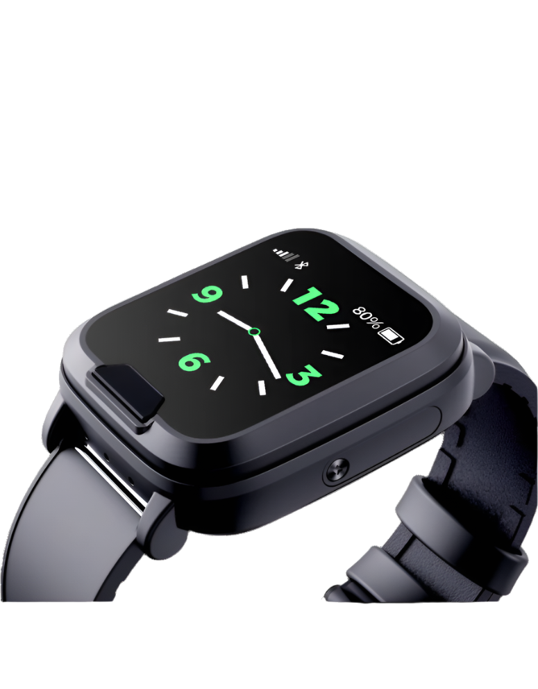

Well suited to monitored residential and managed-response workflows.
Tracklab flagship wearable
The EV06 brings premium wearable safety into the Tracklab ecosystem.
Designed for estates, lone workers, families, and monitored care environments, EV06 combines panic response, live visibility, calling, and health-aware monitoring in a more refined wearable experience built for real deployment.
Used for estate response
Lone worker safety ready
Family monitoring support
Emergency response visibility
24/7Emergency-ready positioning
4GWearable connectivity
GPSLocation-aware workflows

Emergency-first
Faster help flow with live wearer context
Health-aware
Heart-rate, wellness, and movement signals
SOSpanic activation
2G / 3G / 4Gnetwork support where available
GPS + smart locationvisibility when every second matters
Wearable formcomfortable everyday carry
Why EV06 feels different
Built to look premium, but more importantly built to feel deployable.
EV06 is positioned as the newer flagship wearable in the Tracklab product family — combining the trust of the existing ecosystem with a stronger product story, cleaner hierarchy, and a more modern safety-tech user experience.
What this page is built to communicate
- Trusted Tracklab ecosystem fit
- Premium wearable product presentation
- Real-world safety and monitoring relevance
- Clear next step: Book Demo
Trust signals
Positioned for serious buyers, monitored environments, and real-world safety use.
The strongest premium safety-tech sites reduce uncertainty fast. That means clearer response logic, visible deployment fit, and stronger trust language from the first screen down.
Wearable escalation and calling in higher-risk mobile or isolated roles.
Supports reassurance, welfare awareness, and easier contact in urgent moments.
Better positioned as part of a broader response and monitoring story, not a standalone gadget.
Product realism
Show the product as something teams can actually roll out.
Beyond the wearable itself, buyers need to see how EV06 fits into a real operating environment: setup, charging, monitoring, escalation, and daily use.
- Everyday wearable convenience
- Charging and readiness flow
- App / dashboard / operator view potential
- Practical setup inside a wider Tracklab system
Operator dashboard
EV06 Alert Context
- Wearer status
- Last known position
- Battery and network state
- Call / escalation actions
Setup flow
Provision → Assign → Monitor
Real-world scenarios
Tell the story through situations people instantly understand.
Elderly parent alone at home
A fall, confusion event, or urgent panic can escalate faster when the wearer has an immediate wearable contact path.
Lone worker off-site
In isolated or higher-risk environments, a wearable response path can be easier to reach than a phone.
Estate emergency visibility
Location-aware alerts and contact flow make it easier for monitored teams to act decisively.
Premium
Tracklab flagship wearable positioning
Modern
Cleaner hierarchy, motion, and mobile behavior
Deployable
For estates, care, business, and family use
Primary call to action
Ready to see where EV06 fits in your Tracklab offering?
The next step is simple: book a demo, review the product flow, and map how EV06 fits your environment, response model, or customer offering.
Book Demo
Product walkthrough
Deployment discussion
Best-fit conversations
- Estate and security deployment discussions
- Lone worker and staff safety use cases
- Family and care environment suitability
- Product and platform rollout planning